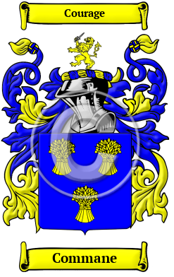

Our conclusion
No surviving Gaelic-period arms — but a late-medieval armigerous tradition
A historically important point first: coats of arms did not exist during the period when the Ó Comáin family was at the height of its power. The Chiefdom of Tulach Commáin flourished in the 8th and 9th centuries AD. Coats of arms as a formal heraldic system did not begin to develop anywhere in Europe until the 12th century, arriving in Ireland only with the Norman invasion after 1169. There can therefore be no surviving authentic Gaelic-period arms for the Clan Ó Comáin chiefdom, because none existed.
What does survive is evidence of a late-medieval armigerous tradition for the Clare Comyn line — the same line, per MacLysaght's reading and the Y-DNA evidence, as the Gaelic Ó Comáin sept under their anglicised Comyn name. The 1650 Ulster King of Arms entry recording arms for "Comen" — most plausibly a scribal misspelling of Coman or Comyn, since Comen is not a documented Irish surname; Sir William Comyn, knight (c. 1440), recorded as ancestor of the Comyns of Corcomroe and Kilcorney in the Burren; and the formal pedigree of this family registered with the Ulster King of Arms in 1748 — all attest that, by the late-medieval period, the Clare line had taken its place within the Anglo-Norman heraldic order under the Comyn anglicisation. These are not 8th-century Gaelic arms; they are 15th-to-18th-century arms borne by the Gaelic line during the centuries of Comyn-anglicisation that followed the dispossession.
Even the Kavanaghs — one of the most powerful Gaelic dynasties in Leinster — when seeking a formal grant of arms in 1582 declared that they were "uncertain under what sort and manner their predecessors bore the said arms" and had to request the Ulster King of Arms to assign arms to them entirely afresh. The dispossessed Gaelic families typically lost the institutional memory of any pre-heraldic emblems they may have used, and adapted to the late-medieval Anglo-Norman heraldic world as they could.
Warning
Commercial arms sold under the Commane / Cummins name

Numerous commercial heraldry websites sell prints, plaques and jewellery bearing a variation of the Norman Comyn arms — blue and gold sheaves — labelled as the "Commane," "Cummins" or "Comyn" family coat of arms. These have no authentic connection to the Irish Clan Ó Comáin and are Norman heraldry incorrectly attributed on the basis of phonetic name similarity alone.
Members of Clan Ó Comáin are asked not to purchase these products. The clan's authentic arms are currently pending a formal application to the Chief Herald of Ireland.
The right approach — a grant of arms from the Chief Herald
Clan Ó Comáin is pending application with the Office of the Chief Herald of Ireland for a new grant of arms. This is the correct, most prestigious and most historically honest course of action available to the clan — a living heraldic document with full legal standing, grounded in one of the most thoroughly researched Gaelic pedigrees presented to the Chief Herald's office in recent years.
The grant will incorporate elements drawn from the ancient Gaelic Ó Comáin heritage — among them the mythical mermaid of Newhall Lake, the Irish harp, and the shamrocks of the family's patron saint. The Office of the Chief Herald recognises the concept of clan or sept arms, under which any member of the clan may display the arms — not merely the individual grantee. A grant to the Chief therefore provides a heraldic identity accessible to all members of Clan Ó Comáin worldwide.
This approach follows well-established precedent. Ancient Gaelic families whose arms were lost with their history have been granted new arms by the Chief Herald throughout the modern period, grounded in their documented noble and royal ancestry. The Ó Comáin pedigree — traceable to the Kings of Déisi Muman (the Déisi of Munster) and the royal line of Uí Maine in Connacht, documented in the Book of Lecan, the Book of Leinster and the Annals of Ulster — is among the most thoroughly documented presented to the office in recent years.
In the meantime
Members of Clan Ó Comáin are asked not to purchase or display the commercial "Commane arms" products sold online. These represent Scottish-Norman heraldry that does not belong to the Gaelic sept and perpetuates a historical confusion that this clan is working to correct.
Chief-approved use of the crest and coat of arms is available to registered clan members only. The story of that grant — an ancient Gaelic clan whose arms were lost with its history, now claiming its rightful place in the Irish heraldic tradition — will itself be a meaningful chapter in one of the oldest and most remarkable family stories in Ireland.